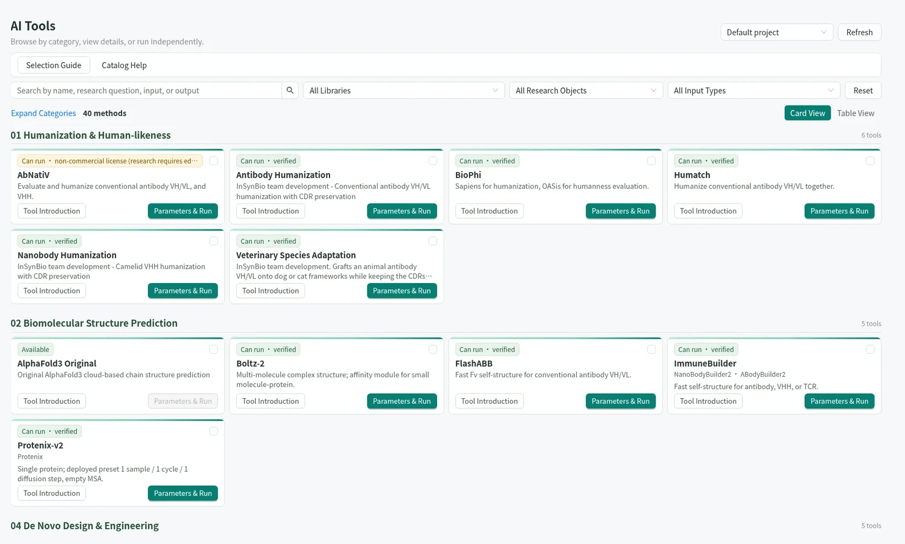
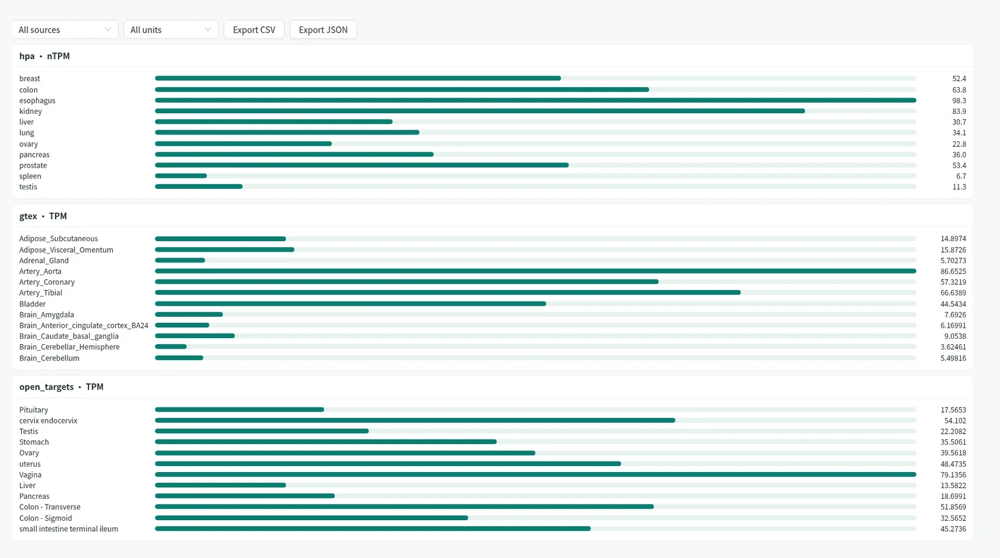
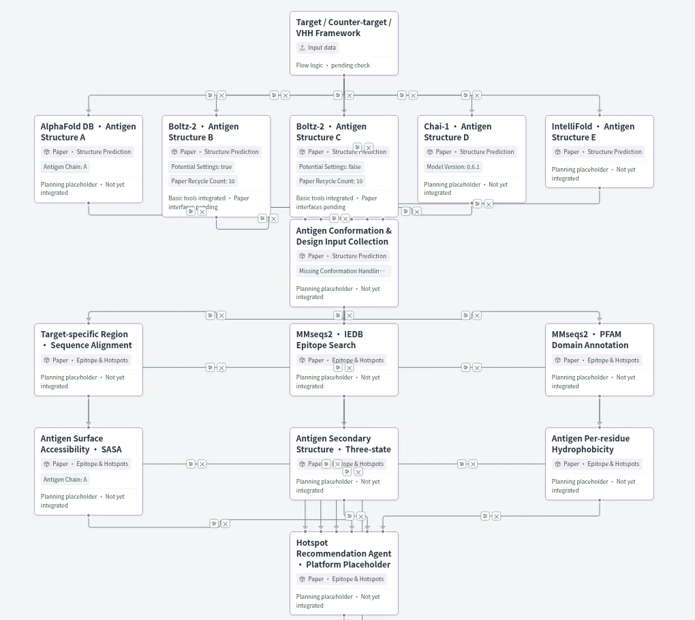
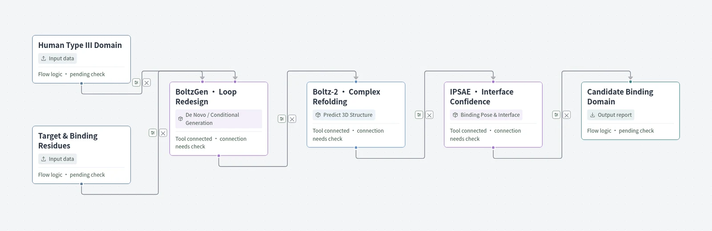
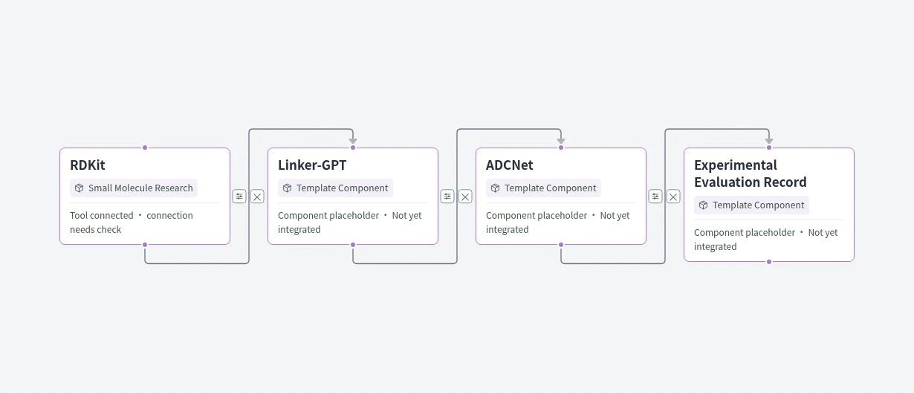
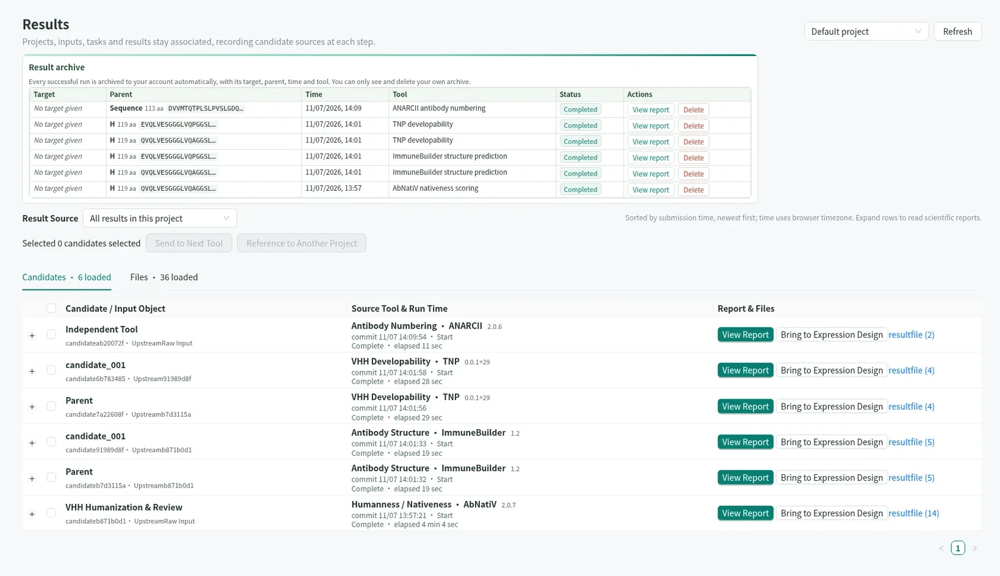

01Overview
TheraSik is an AI implementation platform offering practical AI tools, workflows, and databases for immunology-focused innovative drug R&D — from target analysis, candidate design and comparison, through to protein and DNA construct sequence preparation. The platform is currently a technical-demonstration MVP; we invite companies to trial it on real tasks and validate practical utility together.
Highlights
- Ready to use, and tailored to your pipeline: pre-installed tools and workflows serve as a starting point, while dedicated tools, custom workflows, and client private databases can be configured around specific project rules.
- Documented scope as currently deployed: the catalog lists 210 items, of which 32 are deployed with runtime test records; 5 workflows are marked as runnable (others are built as examples); 10 database categories are deployed, with 2 external entries not yet connected.
- Start with one real task: a suggested first trial covers one parental molecule and one engineering goal — 1 VH/VL pair or 1 VHH. Access at saas.insynbio.com is invitation-only.
Core pillars span target analysis and comparison, antibody engineering and de novo design, drug formats and sequence assembly, and database and workflow customization. This page is for scientific research and early R&D reference only; computational outputs require experimental validation.
02Product demo video
A demonstration of the TheraSik web edition (about 4 min), which plays on this page. The demo was recorded in a separate test environment; it contains no client data.
▲ A walkthrough of the TheraSik SaaS interface (about 4 min).
03What we do, and who we serve
A life-science AI implementation team
Drawing on experience in immunology, antibody engineering, and preclinical research, we deploy suitable computational methods into our clients’ R&D tasks.
Who we serve
Biotechnology companies, CROs, and research teams — especially projects that already have a defined target, candidate molecules, or in-house data.
The platform’s role in a collaboration
We use the current MVP to demonstrate methods and how we deliver. We deploy or develop tools, build workflows, and organize client private databases according to each client’s needs. In this round we are looking for companies to trial the platform, starting from well-scoped real tasks, to validate practical utility together.
04What we offer, and what we deliver
We first confirm the research question, available inputs, and delivery goals, then agree the acceptance criteria and the scope of maintenance.
Scroll horizontally to view full table
| Service | Primary deliverables |
|---|---|
| Tool and workflow deployment | Runtime environment, adapted workflows, and user documentation. |
| Custom tool and workflow development (DIY) | Dedicated tools, workflows, or interfaces, with acceptance examples. |
| Custom private-database build | Standardized data, search fields, sources, and update rules. |
| Computational services for R&D projects | Candidate sequences, structural models, metric comparisons, and method notes. |
05Our development capabilities: tools, workflows, and databases
We already have in-house tools and curated, further-processed databases, and can continue to develop and adapt them to a client’s research rules.
Conventional antibody and VHH humanization
CDR grafting, surface resurfacing, and framework selection.
Multispecific antibody sequence design
Assembly of binding arms, linkers, and Fc according to published rules.
CAR construct sequence design
Selection of binding domains, hinge, transmembrane, and signaling modules.
Independently curated and further-processed databases
Targets, antibodies and VHHs, 400+ ADA records, and 200+ CAR elements, as references for design.

Client customization (DIY)
Develop dedicated tools, configure drug-discovery workflows, and organize and build private databases.
06Which drugs we can analyze and design
Scroll horizontally to view full table
| Drug / molecule type | Supported analysis and design | Current status |
|---|---|---|
| Conventional antibodies and VHHs | Humanization, CDR engineering, and de novo design; comparison of structure and developability. | Runtime tests completed; confirm by method. |
| Bi-/multispecific antibodies | Select binding arms; assemble and check sequences according to format rules. | Construct-assembly demonstration. |
| Non-antibody binders | Design binding domains; analyze complexes and binding interfaces. | Example workflow built. |
| Neoantigen vaccines | Analyze variants, expression, and HLA; screen epitopes and long peptides. | Example workflow built. |
| ADC | Organize antibody, linker, and payload combinations and connect the calculations. | Example workflow built. |
| CAR-T | Select binding domains and CAR elements; assemble construct sequences. | Construct-assembly demonstration. |
Trials are confirmed node by node. Some workflows are built as examples; binding, expression, function, and similar endpoints require experimental validation.
07Which R&D areas the tool catalog covers
The catalog lists 210 items, of which 32 are deployed. Grouped into 8 areas by R&D task, including tools not yet deployed.
Scroll horizontally to view full table
| R&D area | Catalog items | Subcategories included |
|---|---|---|
| Antibody engineering and new-molecule design | 42 | Humanization, de novo design, inverse folding, and mutation scoring. |
| Structure and interaction analysis | 46 | Structure prediction, conformation and flexibility, protein docking, and interface assessment. |
| Developability and physical simulation | 31 | Stability, aggregation, and related metrics; simulation, refinement, and energy scoring. |
| Sequence search and protein language models | 44 | Search, numbering, structure processing, sequence representation, and model scoring. |
| Peptide and small-molecule extensions | 16 | Peptide design, small-molecule docking, and related property analysis. |
| Expression and complex construct design | 9 | Expression elements, DNA constructs, and sequence generation for multispecific antibodies and CARs. |
| Immunology and cell-therapy analysis | 19 | Epitopes and HLA, immune-repertoire analysis, and CAR-related simulation. |
| ADC computation and evaluation | 3 | Linker generation and ADC combination-related calculations. |
Figures are from a snapshot of the current website catalog, aggregated across 18 subcategories. Catalog counts are not deployment counts or counts of scientific validation.
08End-to-end across the platform: from evidence to construct sequences
Target & patents
Unify target identity; compare expression, epitopes, existing drugs, and public patents.
Binder candidates
Humanization or de novo design for antibodies, VHHs, and non-antibody binders; review structure and developability.
Vaccine epitopes
Neoantigens additionally incorporate variants, RNA expression, and HLA binding.
Drug formats
Antibody/VHH, bi-/multispecific, ADC, CAR-T, and vaccine construct assembly.
Sequence delivery
Protein and DNA sequences, element annotations, calculation results, and method records.
The end-to-end scheme is to be validated. External patent access is not yet connected; ADCs also include a chemistry component. Linking experimental data is planned as later work.
09Overview of in-house specialist databases
Independently curated, identity-checked, and further processed into 8 specialist databases, with original sources retained.
- Target evidence: target expression and tractability evidence database.
- Antibody and engineering references: Ab CMC, VHH CMC, bi-/multispecific antibody, and Fc engineering databases.
- Immunology and cell-therapy resources: ADA, CAR elements, and CAR clinical and research databases.

10Platform cases and workflow examples
HER2 case: from database records to target analysis
Verify identity and evidence: HER2 corresponds to ERBB2; review historical scores and evidence dimensions. Compare tissue expression: inspect expression distributions by source and unit, and raise questions for risk verification. Related drug precedents: compare existing molecular formats as a reference for later design choices.



Difficult-target study: de novo VHH design
Input the target structure, hotspots or epitopes, and framework requirements; generate VHH candidates and deliver sequences, structural models, and interface comparisons. This route has completed runtime tests; specific binding and function on difficult targets require project-level validation.

Non-antibody CAR-T binder design
Generate and compare binding domains using routes such as BoltzGen, review the complex and interface, then organize CAR elements and construct sequences. An example has been built; node connection and end-to-end runs are to be validated, and binding, expression, and CAR function require separate validation.

ADC: antibody, linker, and payload
Bring together antibody candidates, linkers, payloads, and conjugation requirements, and organize antibody calculations and chemical-component analysis in preparation for experimental evaluation. An example has been built; some components are not yet connected, and conjugation quality and efficacy require experimental evaluation.

Neoantigen vaccines: OpenVax long-peptide design
Take tumor and normal exomes, RNA, HLA-I, and reference versions through alignment, variant calling, and transcript analysis to produce long-peptide candidates. An example has been built; the full chain is to be validated, and immune responses require experimental evaluation.

Calculation results: retained candidates, metrics, and report access
The results list retains the tool, run time, relevant metrics, and download access. Candidates can be used for option comparison, or carried into expression-sequence preparation. An example of a standalone task result is shown below; end-to-end validation is confirmed separately as a trial task.

Sequence design: handing candidates to the experimental team
Select a suitable host, vector, signal peptide, linker, and tags; inspect protein and DNA sequences, retain element annotations, and export. The plasmid map below uses a public-backbone example to demonstrate map and annotation features; project constructs are verified separately against the candidates.


11Current status, future plans, and how it works
Scroll horizontally to view full table
| Module | Current status | Confirm at trial |
|---|---|---|
| AI tools | 32 items deployed, with runtime test records. | Inputs, parameters, compute, and outputs. |
| Workflows | 5 marked as runnable; the others are examples. | Node connection, end-to-end runs, and result handoff. |
| Databases | 10 categories deployed; 2 external entries not yet connected. | Source, version, and identity-verification status. |
| End-to-end | Calculation and assembly records exist; the full chain is to be validated. | Validate the full chain after staged acceptance. |
Status as of October 2026. The platform is an MVP; binding, expression, stability, and function are evaluated by the corresponding experiments.
Future plans and client services
Scroll horizontally to view full table
| Build direction | Client services and deliverables |
|---|---|
| Deploy and develop ~200 AI tools | Deploy and adapt mature tools, add project-specific functions, and deliver interfaces and acceptance examples. |
| Build and validate scenario workflows | Cover antibodies, vaccines, bispecifics, ADCs, and CAR-T; deliver workflows and run records. |
| Client private experimental databases | Organize molecule, sample, and experimental data; deliver search and comparison pages that link candidates and results. |
Start a trial with one tool, one workflow segment, or one class of data, then expand, deploy, and maintain as needed.
How it works
Ready to use
Pre-installed
Pre-installed tools and workflows are available as a starting point. The catalog lists 210 items, of which 32 are deployed.
Tailored to you
Custom DIY
We build customized workflows and tools around your pipeline and requirements.
Validate together
1 real task
Start with one real task as a free trial calculation: one parental molecule and one engineering goal — 1 VH/VL pair or 1 VHH. After that, we can discuss customization.
12First trial and contact
Suggested scope: one parental molecule and one engineering goal, first validating a segment of the computation and delivery workflow.
Scroll horizontally to view full table
| Both sides confirm | Example first-trial plan |
|---|---|
| Client inputs | 1 VH/VL pair or 1 VHH sequence, the engineering goal, and any available reference materials. |
| Scope of work | Select a suitable humanization or sequence-engineering method; agree the number of candidates and comparison metrics. |
| Deliverables | Candidate FASTA, a table of site modifications, metric comparisons, and method and parameter records. |
| Acceptance | Check sequences, numbering, modified sites, and output files; review sources and calculation records. |
Timeline, fees, compute, and data confidentiality are agreed before kickoff; experimental outcomes are evaluated separately. Other tasks can also be trialed. We welcome co-funded validation; equity can be discussed for a longer-term collaboration.
Login at saas.insynbio.com is invitation-only. Email us to request an invitation code and login details. The same team also offers TheraMab for therapeutic antibody developability design and assessment; TheraSik SaaS does not replace TheraMab's dedicated workflow.
Disclaimer
This page describes the published design and service scope of the TheraSik SaaS platform. Versions, features, and commercial terms are subject to actual delivery and written agreement. Binding, expression, stability, and function require experimental evaluation. For scientific research and early R&D reference only.